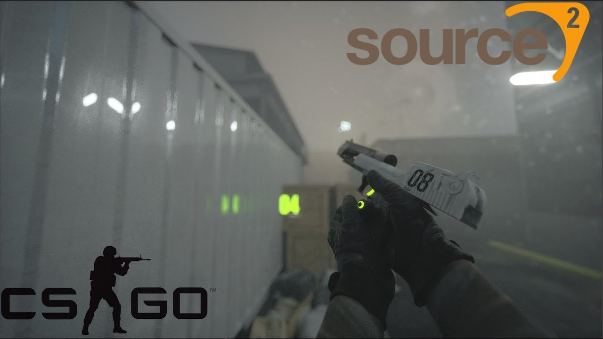

Что изменится с выходом Source 2 для обычного каэсера из матчмейкинга? В долгосрочной перспективе для рядового юзера, скорее всего, ничего не поменяется. В краткосрочной перспективе, скорее всего, будет что-то неприятное: может лагать, что-то не оптимизировано, какие-то графические артефакты. Юзеры вряд ли заметят разницу, а если заметят – в худшую сторону. В идеале Valve нужно сделать так, чтобы игра ощущалась и выглядела, как текущая CS. Переходить к новым инновационным штукам они должны со временем. С графикой – все упирается в шейдеры. Это буквально то, как ваш компьютер отрисовывает происходящее на экране. Сделать шейдеры, как в текущей CS:GO, – не проблема. С другой стороны, основная фишка второго Source 2 – PBR. Штука, которая помогает движку корректнее отображать текстуры, похожие на реальный мир. Будут ли они сразу добавлять это на текущие карты? Сомневаюсь, что у них есть ресурсы переделать все карты. Подозреваю, что у них будет legacy-шейдер для старых материалов из оригинального CS:GO. И они сделают 3-4 ремейка, чтобы показать, как будут выглядеть карты.
